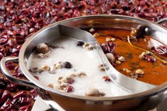
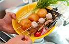

メニュー
薬膳火鍋（赤坂店・大阪なんばパークス店）
薬膳火鍋コース1名様 3,300円

豚肉、羊肉、野菜盛り合わせ、豆腐、春雨、鍋用点心、麺または雑炊、デザート
※プラス1600円で2時間飲み放題（ラストオーダー20分前）。30分500円/人で延長可能。
具材バーから好きな具を好きなだけ！ トッピング常時40種類以上！
プラス900円で2時間食べ放題
- 

選べる2種類のスープ
- 強壮薬膳湯
- 草果・党参・良姜などの薬膳素材をふんだんに使用したスープ。漢方の味が強いが、慣れると止まらなくなる奥深い味。
- 薬膳麻辣湯
- 30種類以上の薬膳素材と秘伝の自家製ラー油を重ね合わせ、辛さと旨味と華やかな香りが渾然一体となった当店自慢のスープ。
- 酸菜湯スヮンツァイタン
- 中国東北部では、鍋料理の材料に白菜や高菜などで「酸菜」という漬物を使う。具であると同時にスープの味付けの要となり、酸味と独特の風味がクセになる。
- 鹹豆漿湯シェンドゥジャンタン
- 中国では温かい豆乳が人気で専門店も沢山あり、甘い豆乳は「甜豆漿」、塩味や出汁食材を合わせた豆乳は「鹹豆漿」と呼ばれ、ヘルシーで鍋にも良く合う。ゆるく固まった豆腐も具として楽しめる。
- トムヤム湯
- 本場中国でも火鍋は様々な種類のスープが開発されているが、当店では南方系の中国料理とも接点が深いタイ料理のトムヤムクンをアレンジした酸っぱ辛いスープを開発。
- 薬膳白湯
- 鶏・豚・牛をベースにしたコラーゲンたっぷりの白湯スープに、30種類以上の薬膳素材を加えたスープ。薬膳の味を控目にしたいお客様向け。
- 素食湯
- 豆乳ベースのスープに七宝特製の薬膳ダレを合わせたスープ。ゆるく固まった豆腐も具として楽しめる。
- 素食麻辣湯
- 豆乳スープと薬膳ダレ、辛さとシビレが入り交じり、ベジタリアン仕様ながらパンチの効いた味わい。
- 黒烏龍湯
- 黒ウーロン茶のほのかな苦味と薬膳が融合した、サッパリした新感覚の鍋。
- 黄酒湯
- 紹興酒のコクと旨味を活かしたスープ。独特の香りが後を引く。
七宝特製スッポン火鍋コース（要予約）1名様 7,800円
当店では鍋料理の究極を目指し、滋養強壮の代表食材でもあるスッポンを使った唯一無二の火鍋をご用意致しました。スッポン料理が最も盛んな中国の調理技術と、”まる鍋”と呼ばれる日本のスッポン鍋の長所を融合させた、スッポンの魅力を最大限に生かした鍋です。スッポンの極上出汁を真正面から味わえる清湯スープと、さまざまな素材と合わさっても魅力を失わない、スッポンの懐の深さを堪能できる薬膳スープの2種類を楽しんでいただきます。
スッポンは築地「川魚小林」様より、静岡県浜松の「服部中村養鼈場」をはじめとした、季節ごとに最も品質の高い元気なスッポンを仕入れて調理直前に捌くため、2日前までの予約が必要となります。スッポンのあらゆる部位が楽しめて滋養強壮効果も満点な、究極スッポン料理をお楽しみください。